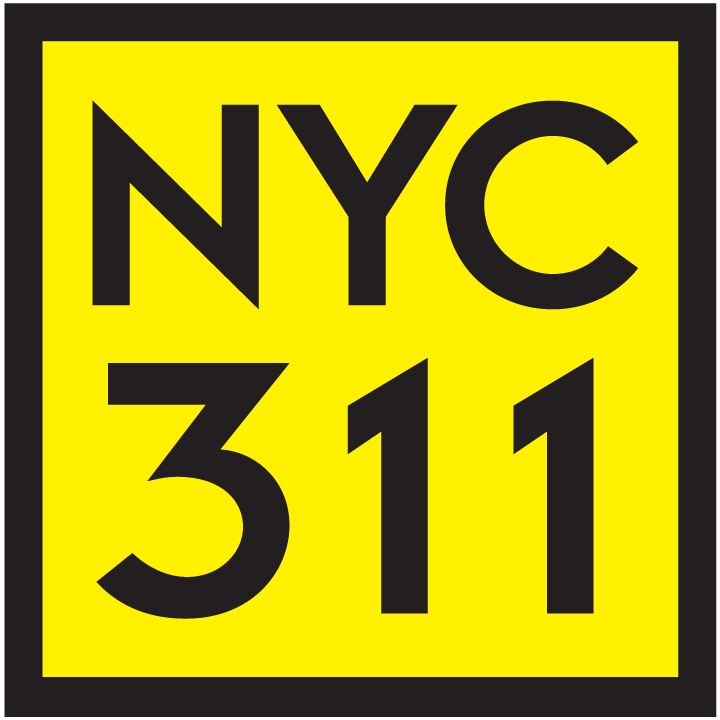

NYC 311 Service Request Analysis
Ingested and queried 200,000 NYC 311 complaints on AWS (S3 + Athena) to identify borough-level resolution inequities across city agencies, and built a logistic regression classifier -- validated against SageMaker Linear Learner -- to flag at-intake whether a request will resolve within 3 days.
More details
Problem
The NYC Mayor's Office of Operations suspected that certain agencies were disproportionately slow at resolving high-priority complaints in specific boroughs, a potential equity problem in city service delivery. They needed a data-driven way to identify which agency-borough combinations were lagging behind citywide benchmarks, and whether complaint metadata alone could predict resolution speed at intake, enabling earlier triage of slow-resolution requests before they age past service thresholds.
Approach
A random sample of 200,000 Q1 2026 NYC 311 service requests (Jan 29 to Mar 21) was loaded into S3 and queried via AWS Athena. SQL queries joined the complaints table to an agency lookup, computed per-agency citywide average resolution times as benchmarks, and surfaced agency-borough combinations where mean resolution time exceeded that benchmark. For the classification task, 173,870 records were extracted via Athena using a dedicated modeling query. Features included agency, borough, problem category, day of week, and hour of day. Zip code was dropped due to 1,768 missing values and the impracticality of one-hot encoding 200+ unique codes. An 80/20 stratified train-test split was used to address the 84-16 class imbalance between fast and slow resolutions. A logistic regression baseline was trained locally with scikit-learn and replicated on SageMaker AI using the Linear Learner built-in algorithm to compare local vs. cloud performance.
Results & Impact
The Athena stakeholder query surfaced specific agency-borough pairs with resolution times materially above their citywide agency averages, providing the Mayor's Office with an actionable ranked list for operational review. The logistic regression classifier achieved 84.7% accuracy and 98.8% recall for fast resolutions, with agency assignment (particularly NYPD) and hour of day emerging as the strongest predictors. The SageMaker Linear Learner reproduced identical results, confirming that cloud-based training offers no accuracy gain at this data scale, though the architecture is in place to scale to more computationally expensive models like XGBoost. A key limitation is the class-imbalance-driven bias: the model achieves only 10% recall on slow resolutions, underperforming on the exact cases most actionable for stakeholders. Addressing this imbalance via resampling or threshold adjustment is the primary next step.